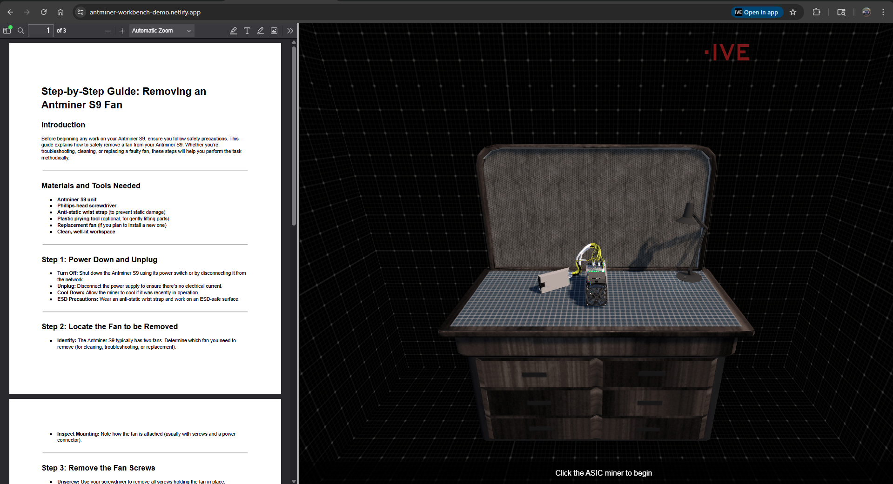

Hi, this is my project portfolio. It showcases videos of shipped work projects alongside links to personal and experimental builds. I have worked extensively with emerging technologies, where rapid prototyping, iteration, and problem-solving under uncertainty are core to the process.
A homeschooler through and through, I learn best by applying concepts directly in real systems.
Joy/Komatsu Projects
Disclaimer: This section only includes material that can be found publicly. I do not claim ownership or rights to these projects.
This work is shown solely to showcase projects I have contributed to. Some items were prototypes or exploratory efforts that were
shelved and are not publicly available.
UGSR Continuous Miner Simulator
Underground soft rock simulator experience focused on continuous miner operation and training.
Exploratory prototype investigating mobile gameplay to gamify high-level mining concepts.
Unity, Mobile, Prototyping, Gamification
Interactive Virtual Experiences
Interactive Virtual Experiences (IVE) was an exploratory partnership founded by my brother and me to prototype and evaluate interactive software ideas. While none of the concepts moved forward into production, the resulting prototypes were retained and are now showcased as personal projects. These can be found on the IVE website.
A WebGL-based interactive training tool prototype for the Crypto-Currency market.
Unity, WebGL, Training Tool, Prototype
QuestBoard
A project focused on creating a back-end API interacting with a Unity WebGL front-end.
Unity, API Backend, Learning Project
Important (2026): There is a known issue in the Unity interface where the quest state text does not update correctly. All other quest functionality works as expected. This will be addressed when time permits.
SiteScout
A lightweight project exploring discovery, tracking, and presentation of site or content signals.
Python, Edge AI, WebApp, Learning Project
Flask Emotion Detection AI
A Flask-based experiment for emotion detection, inference, and simple web presentation.
Python, Flask, WatsonX AI, Learning Project
UGSR Continuous Miner Simulator
The ProMiner Operator Training Simulator was my first Unity3D project. Released in South Africa in 2009, it was created to help address illiteracy challenges in technical training. Since then, the simulator has gained customers worldwide and has also been used extensively as a marketing tool at industry trade shows.
As a founding—and ultimately the final—member of the original development team, I have worked across every aspect of the project over the years, contributing to its long-term growth, maintenance, and evolution.
Project Year: 2009 - Present
Unity, Simulation, Training
UGSR Battery Hauler Simulator
Kicked off in 2020, this training simulator began as a rapid prototype that combined a gaming joystick, pedals, and a VR headset within a virtual underground environment, allowing trainees to learn how to operate a Komatsu battery-powered hauler. The prototype was completed in three months and successfully secured management buy-in, leading to its transition into a full production project.
I served as the primary developer throughout the project’s evolution, leading development across programming, systems design, 2D art, 3D modeling, audio, and UX. During a short phase of the project, I also worked alongside and mentored a junior developer before returning to primary ownership. As the simulator moved into full production, it was expanded to include a full physical frame, integration with real machine hardware, hand motion tracking, and ongoing feature development.
Project Year: 2020 - Present
Unity, Simulation, Training
Project Gold Miner (Exploratory Mobile Game)
This project was an opportunity for me to explore mobile development while getting hands-on experience with Unity’s Data-Oriented Technology Stack (DOTS) and Entity Component System (ECS).
Built for Android and UWP, the project was designed for an audience with little to no background in underground mining. Its goal was to introduce high-level concepts of Continuous Miner operation, while also incorporating light mine and resource management elements to reinforce learning through interaction.
Project Year: 2019
Unity, Mobile, Prototyping
IVE - ASIC Workbench

The ASIC Workbench Interactive Training Tool Demo is a WebGL-based proof of concept designed to demonstrate how interactive 3D content can be used to train technicians on hardware teardown and maintenance procedures. Built as a lightweight, browser-based experience, the demo showcases the potential for a larger, fully featured training platform.
In its current state, the project focuses on the guided removal of a single cooling fan from an Antminer S9. Users can inspect and interact with the 3D model while following a step-by-step PDF guide that is embedded directly into the interface and dynamically highlights the current procedure step. The demo was created to clearly communicate the concept to stakeholders and illustrate how the system could scale into a complete, interactive training solution.
This project is a hands-on learning exercise focused on integrating REST APIs with Unity. It involved both building and hosting a mock backend API and developing a Unity front end to interact with it, with the project also serving as a portfolio piece.
The backend was implemented as a mock REST API using serverless functions to relay requests to a Firebase database, where quest data is stored and updated via standard HTTP methods. On the front end, a Unity-based UI retrieves quest information, displays it to the user, and allows quests to be accepted or dropped, updating their status through API calls. Development was intentionally split across different environments and tools to better mirror real-world workflows, and the project continues to serve as a practical reference for API-driven UI patterns in Unity.
SiteScout is a personal, agentic AI-powered lead generation project designed to turn cold outreach into data-backed, visual, and persuasive sales conversations. Built with web developers and agencies in mind, it goes beyond basic lead discovery by automatically auditing business websites, identifying technical and visual issues, and generating tailored redesign pitches.
The system combines live business discovery, automated site capture, heuristic analysis, and AI-driven visual evaluation within a bounded reasoning loop. It gathers real evidence—HTML structure and full-page screenshots—scores sites based on modernization signals, and produces professional, non-aggressive outreach copy grounded in those findings. SiteScout is engineered to be fast, ethical, and respectful, with built-in rate limiting, concurrency controls, and strict adherence to robots.txt.
This project was completed as one of the final assignments in the Coursera / IBM AI Developer Professional Certificate program and takes the form of a lightweight Flask-based web application for AI-driven emotion detection.
The original project scaffolding—HTML and JavaScript structure—was provided by the Coursera / IBM team. I extended the application by updating the front-end to include visual image and emoticon-based responses in addition to text output, implementing the Flask backend, and configuring the WatsonX Emotion service for API-based emotion classification. The project is hosted as a live demo and serves as a practical example of integrating cloud-based AI services into a simple web application.